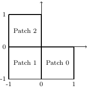
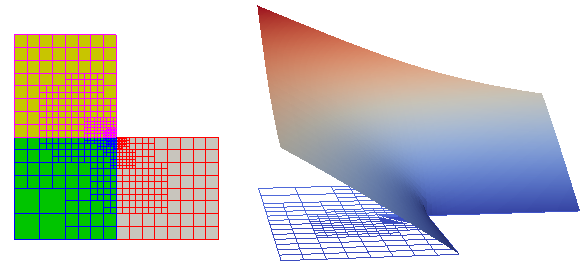

This tutorial, shows how to use some functions for adaptive refinement. It is based on poisson_example.cpp, see there for details.
More details on the hierarchical splines can be found in thbSplineBasis_example.cpp as well as in the Hierarchical splines module description.
Setting up the problem
As in poisson_example.cpp, we include the gismo namespace...
Main header to be included by clients using the G+Smo library.
Provides class for adaptive refinement.
The G+Smo namespace, containing all definitions for the library.
...and a command-line argument which allows the user to create a Paraview visualization file.
bool plot = false;
gsCmdLine cmd(
"Tutorial on solving a Poisson problem.");
cmd.addSwitch("plot", "Create a ParaView visualization file with the solution", plot);
cmd.addInt("r", "numLoop", "number of refinement loops", numRefinementLoops);
try { cmd.getValues(argc,argv); } catch (int rv) { return rv; }
Class for command-line argument parsing.
Definition gsCmdLine.h:57
#define index_t
Definition gsConfig.h:32
Problem definition
We consider the Laplace problem on an L-shaped domain \( (-1,1)^2 \setminus [0,1]^2 \) which is represented by three squares.

L-shaped domain, 3 patches.
We solve the Laplace problem
\[ -\Delta u = 0~\mathrm{in}~\Omega,\quad u = u_{ex} ~\mathrm{on}~\partial \Omega, \]
where the exact solution \(u_{ex}\) is given in polar coordinates by
\[ u_{ex}(r,\varphi) = r^{\frac{2}{3}} \sin\Big( ( 2\varphi - \pi)/3 \Big). \]
We define exact solution (in Cartesian coordinates) and the (homogenous) right-hand-side of the PDE:
gsFunctionExpr<> g(
"if( y>0, ( (x^2+y^2)^(1.0/3.0) )*sin( (2*atan2(y,x) - pi)/3.0 ), ( (x^2+y^2)^(1.0/3.0) )*sin( (2*atan2(y,x)+3*pi)/3.0 ) )", 2);
Class defining a multivariate (real or vector) function given by a string mathematical expression.
Definition gsFunctionExpr.h:52
Getting geometry and basis
The gsMultiPatch object describing the geometry is read in from an .xml-file:
std::string fileSrc( "planar/lshape2d_3patches_thb.xml" );
Container class for a set of geometry patches and their topology, that is, the interface connections ...
Definition gsMultiPatch.h:100
Reads an object from a data file, if such the requested object exists in the file.
Definition gsReadFile.h:43
The information on patch-interfaces and/or boundaries is not necessarily contained in the .xml-file. To make sure that interfaces and boundaries are correctly set up, call gsMultiPatch::computeTopology().
bool computeTopology(T tol=1e-4, bool cornersOnly=false, bool tjunctions=false)
Attempt to compute interfaces and boundaries automatically.
Definition gsMultiPatch.hpp:377
To prescribe Dirichlet boundary conditions on all boundaries, we use the gsMultiPatch::const_biterator to iterate through all boundaries:
for ( gsMultiPatch<>::const_biterator
bit = patches.
bBegin(); bit != patches.
bEnd(); ++bit)
{
}
Class containing a set of boundary conditions.
Definition gsBoundaryConditions.h:342
void addCondition(int p, boxSide s, condition_type::type t, gsFunctionSet< T > *f, short_t unknown=0, bool parametric=false, int comp=-1)
Adds another boundary condition.
Definition gsBoundaryConditions.h:650
const_biterator bBegin() const
Definition gsBoxTopology.h:139
const_biterator bEnd() const
Definition gsBoxTopology.h:144
@ dirichlet
Dirichlet type.
Definition gsBoundaryConditions.h:31
Obtaining the gsMultiBasis from the gsMultiPatch is straightforward, just call the corresponding constructor:
Holds a set of patch-wise bases and their topology information.
Definition gsMultiBasis.h:37
Note that the resulting gsMultiBasis will be composed of the bases defining the geometry. In this example, the geometry is given as a gsTHBSpline. Accordingly, the created gsMultiBasis is composed of gsTHBSplineBasis.
Get a gsTHBSplineBasis from a gsTensorBSpline
If the geometry is not given as a gsTHBSpline, but as a gsTensorBSpline...
std::string fileSrcTens( "planar/lshape2d_3patches_tens.xml" );
...one can create a gsTHBSplineBasis as follows:
std::vector< gsBasis<real_t>* > basisContainer;
for ( size_t i = 0; i < basesTens.nBases(); i++)
Truncated hierarchical B-spline basis.
Definition gsTHBSplineBasis.h:36
Loop
Instead of just solving the problem once, we wrap a loop around the solving process. For each computed solution, we compute the distribution of the error. Based on this error indication, we mark a certain number of cells for refinement.
Setting up adaptive refinement parameters
For adaptive refinement, we need to specify a criterion for marking cells, and a parameter. Currently implemented are PUCA, GARU, errorFraction (a.k.a. Doerfel-marking), see gsMarkElementsForRef().
Setting the parameter to 0 will result in global refinement, setting it to 1 will result in (almost) no refinement.
MarkingStrategy adaptRefCrit = PUCA;
const real_t adaptRefParam = 0.9;
Solving the problem
If desired or necessary (e.g., because the geometry is given by a very coarse representation), apply initial uniform (i.e., global) refinement steps:
int numInitUniformRefine = 2;
for (int i = 0; i < numInitUniformRefine; ++i)
bases.uniformRefine();
Wrap a loop around the solution process
for( int refLoop = 0; refLoop <= numRefinementLoops; refLoop++)
{
The part re solving the equation is the same as in poisson_example.cpp.
PoissonAssembler.options().setInt("DirichletValues", dirichlet::l2Projection);
PoissonAssembler.assemble();
gsSparseSolver<>::CGDiagonal solver( PoissonAssembler.matrix() );
gsMatrix<> solVector = solver.solve( PoissonAssembler.rhs() );
PoissonAssembler.constructSolution(solVector, sol);
A scalar of vector field defined on a m_parametric geometry.
Definition gsField.h:55
A matrix with arbitrary coefficient type and fixed or dynamic size.
Definition gsMatrix.h:41
Implementation of an (multiple right-hand side) Poisson assembler.
Definition gsPoissonAssembler.h:37
Adaptive refinement
After having computed the solution, we compute the local errors. Either by some a posteriori error estimation technique, or, as in this academic example, by computation of the exact error.
gsExprEvaluator<>::geometryMap Gm = ev.
getMap(patches);
const std::vector<real_t> & eltErrs = ev.
elementwise();
Definition gsExpressions.h:928
Generic evaluator of isogeometric expressions.
Definition gsExprEvaluator.h:39
void setIntegrationElements(const gsMultiBasis< T > &mesh)
Sets the domain of integration.
Definition gsExprEvaluator.h:110
const std::vector< T > & elementwise() const
Returns an std::vector containing the last computed values per element.
Definition gsExprEvaluator.h:99
T integralElWise(const expr::_expr< E > &expr)
Calculates the integral of the expression expr on each element.
Definition gsExprEvaluator.h:159
variable getVariable(const gsFunctionSet< T > &func, index_t dim=1)
Registers func as a variable and returns a handle to it.
Definition gsExprEvaluator.h:124
geometryMap getMap(const gsMultiPatch< T > &mp)
Registers mp as an isogeometric geometry map and return a handle to it.
Definition gsExprEvaluator.h:116
Having computed the element-wise errors, we select those that need to be marked by calling gsMarkElementsForRef(), where the previously defined parameters adaptRefCrit and adaptRefParam are used. The actual refinement is done by gsRefineMarkedElements().
std::vector<bool> elMarked;
for (
size_t k=0; k!=elMarked.size(); k++)
gsInfo<<
" "<<elMarked[k];
void gsMarkElementsForRef(const std::vector< T > &elError, int refCriterion, T refParameter, std::vector< bool > &elMarked)
Marks elements/cells for refinement.
Definition gsAdaptiveRefUtils.h:196
void gsRefineMarkedElements(gsMultiBasis< T > &basis, const std::vector< bool > &elMarked, index_t refExtension=0)
Refine a gsMultiBasis, based on a vector of element-markings.
Definition gsAdaptiveRefUtils.h:294
#define gsInfo
Definition gsDebug.h:43
Note/Warning:
As of now, we cannot access a single element of a gsHTensorBasis directly (e.g., by some index). gsMarkElementsForRef() and gsRefineMarkedElements() rely on the assumption that the gsDomainIterator used in these two functions will iterate over the elements in the same order.
This is also the reason why elMarked is a vector of booleans indicating "refine!" or "don't refine!" for each element (instead of, e.g., a list of inidces of elements).
Recall from thbSplineBasis_example.cpp that the refined area must contain the support of at least one basis function. Due to this, we also refine the 1-ring of cells around marked cells.
Adaptive refinement on a gsMultiPatch geometry can result in interfaces which are no longer fully matching. Thus, it is important to call gsMultiBasis::repairInterfaces().
const ifContainer & interfaces() const
Return the vector of interfaces.
Definition gsBoxTopology.h:252
Plotting final solution
In the last iteration, we export the solution to paraview files
if( plot && refLoop == numRefinementLoops )
{
gsWriteParaview<>(solField, "adaptRef", 1000, true);
}
Plot the solution in Paraview
if( plot )
{
}
static void open(const std::string &fn)
Opens the file fn using the preferred application of the OS.
Definition gsFileManager.cpp:688

Mesh (left, coloured by patch-index) and solution after 4 adaptive refinement steps.
Annotated source file
Here is the full file examples/adaptRefinementThb_example.cpp. Clicking on a function or class name will lead you to its reference documentation.
int main(int argc, char *argv[])
{
bool plot = false;
gsCmdLine cmd(
"Tutorial on solving a Poisson problem.");
cmd.addSwitch("plot", "Create a ParaView visualization file with the solution", plot);
cmd.addInt("r", "numLoop", "number of refinement loops", numRefinementLoops);
try { cmd.getValues(argc,argv); } catch (int rv) { return rv; }
gsFunctionExpr<> g(
"if( y>0, ( (x^2+y^2)^(1.0/3.0) )*sin( (2*atan2(y,x) - pi)/3.0 ), ( (x^2+y^2)^(1.0/3.0) )*sin( (2*atan2(y,x)+3*pi)/3.0 ) )", 2);
gsInfo<<
"Source function " << f <<
"\n";
gsInfo<<
"Exact solution " << g <<
"\n\n";
std::string fileSrc( "planar/lshape2d_3patches_thb.xml" );
gsInfo <<
"The domain is a "<< patches <<
"\n";
std::string fileSrcTens( "planar/lshape2d_3patches_tens.xml" );
for ( gsMultiPatch<>::const_biterator
bit = patches.
bBegin(); bit != patches.
bEnd(); ++bit)
{
}
std::vector< gsBasis<real_t>* > basisContainer;
for ( size_t i = 0; i < basesTens.nBases(); i++)
int numInitUniformRefine = 2;
for (int i = 0; i < numInitUniformRefine; ++i)
bases.uniformRefine();
MarkingStrategy adaptRefCrit = PUCA;
const real_t adaptRefParam = 0.9;
for( int refLoop = 0; refLoop <= numRefinementLoops; refLoop++)
{
PoissonAssembler.options().setInt("DirichletValues", dirichlet::l2Projection);
PoissonAssembler.assemble();
gsSparseSolver<>::CGDiagonal solver( PoissonAssembler.matrix() );
gsMatrix<> solVector = solver.solve( PoissonAssembler.rhs() );
PoissonAssembler.constructSolution(solVector, sol);
gsExprEvaluator<>::geometryMap Gm = ev.
getMap(patches);
const std::vector<real_t> & eltErrs = ev.
elementwise();
std::vector<bool> elMarked;
for (
size_t k=0; k!=elMarked.size(); k++)
gsInfo<<
" "<<elMarked[k];
if( plot && refLoop == numRefinementLoops )
{
gsWriteParaview<>(solField, "adaptRef", 1000, true);
}
}
if( plot )
{
}
else
{
gsInfo<<
"Done. No output created, re-run with --plot to get a ParaView "
"file containing Plotting image data.\n";
}
return EXIT_SUCCESS;
}